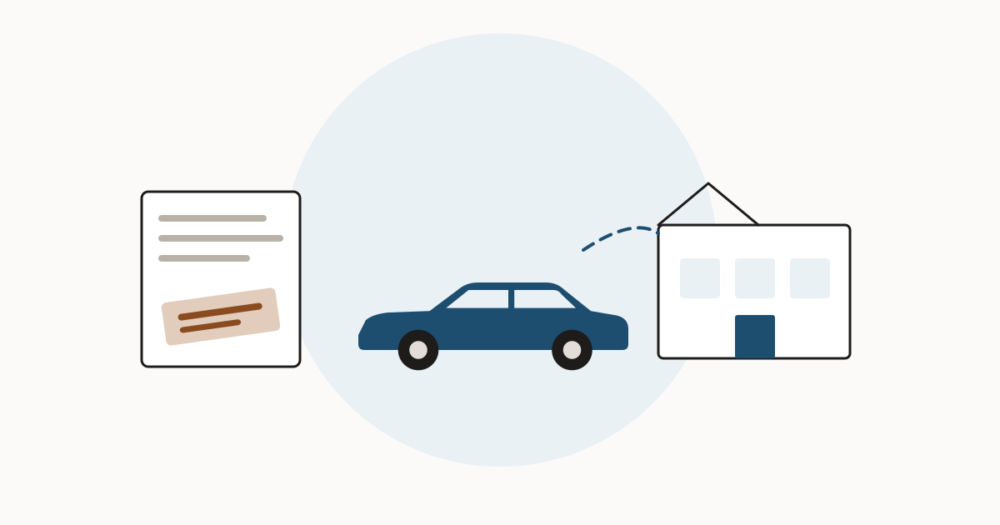

Manufacturer buyback titles: what a lemon-law repurchase means for you

When a new car cannot be fixed after repeated attempts, a state lemon law can require the manufacturer to buy it back. Those cars are not scrapped. Most are repaired and resold, and the brand on the title is how the next buyer is supposed to find out.
How the brand gets there
The mechanism is a state one, so it differs. Two examples show the shape of it.
Oregon
Manufacturers must notify the DMV when they repurchase a vehicle and title it in their own name, and the vehicle is branded Lemon Law Buyback — a notation a consumer sees in the title brands box. The seller must also give the buyer a written Lemon Law Buyback statement, which the buyer signs to show they received and understood it. Oregon cites ORS 646A.404 (Oregon DMV).
Florida
A repurchased vehicle may not knowingly be sold until the department stamps the title, in a conspicuous place, with words showing its prior use or with Manufacturer's Buy Back (§ 319.14(1)(a), Florida Statutes). On the title issued to the manufacturer the brand appears abbreviated as "Manuf Buy Bk", and the state's titling procedure requires a resale disclosure of nonconformity (FLHSMV procedure TL-34).
Buyback brands are applied state by state, with different wording. A title history across states is what finds one.
Run a VIN check at VinCheckUp Advertising disclosure: the link above is an affiliate link. If you buy a report through it, this site may earn a commission at no extra cost to you. It does not change what is written on this page.Why the brand can go missing
Three things work against you. The brand is applied by one state, under that state's rules. The wording is not standardised, so you are looking for several different phrases. And a vehicle retitled in another state may not carry the notation forward. This is the same weakness described in title brands and title washing, and the reason a single-state check is not enough.
What to ask before you buy one
- What was the defect? Get it named. A repeated electrical fault and a repeated brake fault are not the same risk.
- Ask for the repair orders. A lemon-law repurchase follows several documented failed repairs. Those records exist.
- What was done before resale? The manufacturer usually repairs the defect before the car goes back out. Ask what was replaced and when.
- What warranty remains? Coverage terms vary, and some manufacturers limit coverage on branded vehicles — see whether the factory warranty transfers.
- Any open recalls? Separate question, free to answer — see open recalls on used cars.
Is a buyback a bad buy?
Not automatically, and it is a different proposition from a salvage car. Nothing was crashed, flooded or burned. One defect could not be resolved within a state's statutory attempts, the manufacturer took the car back, and it was almost certainly repaired under more scrutiny than a routine warranty job gets.
What the brand does is permanent and financial: it follows the car, narrows the pool of future buyers, and reduces what you can resell it for. If the price does not already reflect that, the brand is doing you harm and the discount is doing you no good.
Check whether a buyback, salvage or lemon notation appears anywhere in the car's title history.
Run a VIN check at VinCheckUp Advertising disclosure: the link above is an affiliate link. If you buy a report through it, this site may earn a commission at no extra cost to you. It does not change what is written on this page.